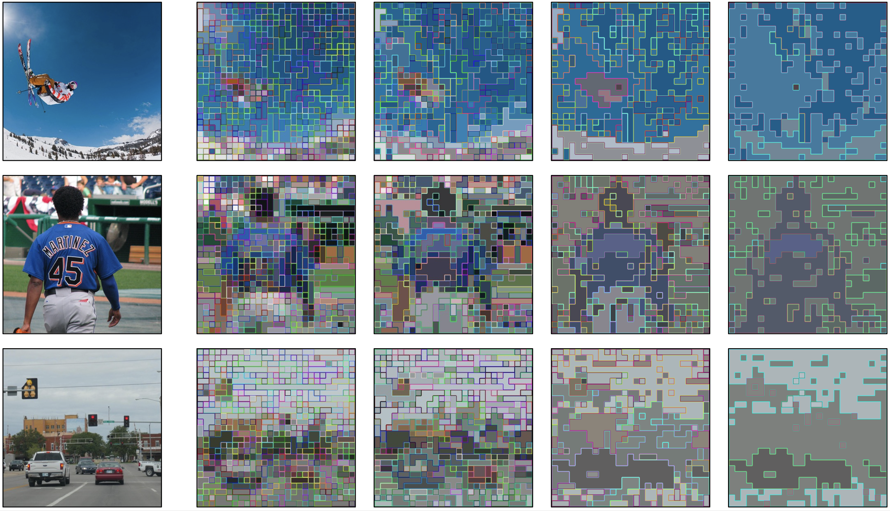
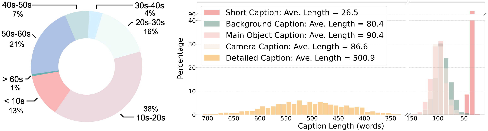

Less is More for Efficient Video Detailed Captioning and a New Benchmark
AuroraCap is a multimodal LLM designed for image and video detailed captioning. We also release VDC, the first benchmark for detailed video captioning, featuring over one thousand videos with significantly longer and more detailed captions than existing datasets.
Observation: We found that image-based LLaVA-like multimodal large language models can be easily adapted to a video one without any additional parameters but only with high-quality video-text instruction data for finetuning.
Efficency: We can reduce the number of token used for image or video before injecting into LLM with marginal performance drop. Therefore, we propose AuroraCap, which is the state-of-the-art open-sourced video captioning model.
Benchmark: We also release VDC, the first benchmark for detailed video captioning, featuring over one thousand videos with significantly longer and more detailed captions than existing datasets.
We propose AuroraCap, a simple video captioner based on multimodal large language model.
We follow the simplest architecture design without additional parameters for temporal modeling.
To address the overhead caused by lengthy video sequences, we implement the token merging strategy, reducing the number of visual tokens input.
We present VDC, a video detailed captioning benchmark with over one thousand carefully annotated structured captions.
In addition, we propose a new LLM-assisted metric VDCScore for bettering evaluation.
We adopt a divide-and-conquer strategy to transform the evaluation of long captions into multiple short question-answering pairs.
AuroraCap: A Video Detailed Captioning Baseline
Architecture
LLaVA.
To effectively leverage the capabilities of both the pre-trained LLM and visual model, LLaVA adapt a simple multilayer perceptron (MLP) projection layer to connect each patch tokens of image features into the word embedding space.
Token merging.
To increase the throughput of existing ViT models, Token Merging is proposed to gradually combines similar tokens in a transformer to reduce the number of tokens passing through ViT models.
Token Merging has been proven to be effective on image and video classification tasks even without the need for training.
We conduct frame-wise token merging in AuroraCap, where the feature is extracted by CLIP ViT-H model.
We show token merging visualization examples from COCO, VG, SA-1B as follows:

Figure 1: Token merging visualization. From top to bottom, the image IDs are COCO:COCO-train2014-000000247906, VG:2331508, SA-1B:sa-393200. From left to right, the number of tokens representing the images are 490, 154, 18, and 6.
Training Recipe
Pretraining stage.
Similar to LLaVA, we first align visual features with the word embedding space of LLMs.
To achieve this, we freeze the pretrained ViT and LLM, training solely the vision-language connector.
Vision stage.
Unlike LLaVA, we next unfreeze the pretrained ViT while freezing the LLM during vision stage and train with the public data among various computer vision tasks to get better generalization.
Language stage.
Finally, we conduct end-to-end training, which means all the components are trainable, with the most high-quality public data during language stage.
Evaluation
Image Captioning.
We evaluate AuroraCap using CIDEr, BELU-4, BELU-1, METEOR, and ROUGE-L metric on Flickr, NoCaps, and COCO-Cap benchmarks and compare it with LLM-based state-of-the-art methods.
AuroraCap shows good performance under zero-shot settings.
Notice that these benchmarks all contain short captions consisting of a single sentence, so they only partially reflect the model's performance.
Model
Flickr (31,784)
NoCaps (4,500)
COCO-Cap (5,000)
C
R
C
R
C
R
LLaVA-1.5-7B
74.9
52.8
105.5
59.4
110.3
55.5
LLaVA-1.5-13B
79.4
53.9
109.2
60.3
115.6
56.5
LLaVA-1.6-7B
68.4
50.3
88.4
54.6
99.9
52.4
LLaVA-1.6-13B
66.6
48.8
88.1
54.9
101.8
52.1
MiniCPM-V-3B
66.8
51.0
89.9
55.8
94.2
52.3
DeCap
56.7
—
42.7
—
91.2
—
Flamingo-80B
67.2
—
—
—
84.3
—
Chameleon-34B
74.72
—
—
—
120.22
—
GPT-4V
55.38
—
—
—
78.58
—
Gemini-1.5 Pro
82.24
—
—
—
99.82
—
AuroraCap-7B
88.9
55.4
111.4
60.6
120.8
57.2
Table 2: Comparison AuroraCap with SoTA methods on video question answering and classification benchmarks under zero-shot setting.
Video Captioning.
Although the current video captioning benchmarks are only contains one-sentence captions, to compare with prior work, we similarly evaluate on these benchmarks.
We evaluate AuroraCap on MSR-VTT, VATEX, and ActivityNet Captions and compare it with other methods.
Model
MSR-VTT (1,000)
VATEX (1,000)
C
B@1
B@4
M
R
C
B@1
B@4
M
R
ZeroCap
9.6
—
2.9
16.3
35.4
—
—
—
—
—
DeCap
18.6
—
14.7
20.4
—
18.7
—
13.1
15.3
—
PaLI-3
21.3
—
—
—
—
—
—
—
—
—
Ma et al.
22.1
—
3.5
17.3
28.7
23.9
—
2.8
14.1
23.5
LLaVA-7B
16.9
—
—
—
—
—
—
—
—
—
Video-LLAMA
2.3
—
4.9
16.8
—
3.8
—
4.3
16.3
21.8
AuroraCap-7B
33.1
58.6
21.0
23.9
49.5
33.8
57.1
18.4
19.0
40.8
Table 3: Comparison AuroraCap with SoTA methods on existing video captioning benchmarks under zero-shot setting.
VDC: A Video Detailed Captioning Benchmark
Benchmark Dataset Curation
Video collection and processing.
We building VDC upon Panda-70M, Ego4D, Mixkit, Pixabay, and Pexels.
Note that the videos used in VDC construction are not included in the training data of AuroraCap.
To ensure balanced data distribution, we allocate equal proportions of different video sources.
We first split the video into clips and apply dense frame extraction, then manually replacing blurry frames with adjacent clear ones.
Structured detailed captions construction pipeline.
We develop a structured detailed captions construction pipeline to generate extra detailed descriptions from various perspectives, significantly extending the length and enhancing the richness compared to previous benchmarks.
The structured detailed captions includes the following categories:
Camera caption.
Describe the camera work in detail, including shot types, angles, movements, transitions, and any special effects used to enhance the video.
Short caption.
Summarize the video in one detailed sentence, capturing key actions and the overall mood.
Background caption.
Provide a detailed description of the background, including objects, location, weather, time, and any dynamic elements.
Main Object caption.
Give a thorough description of the main subject’s actions, attributes, interactions, and movements throughout the video frames.
Detailed caption.
Generate a detailed, vivid caption for the video, covering all categories, ensuring it’s engaging, informative, and rich enough for AI to recreate the video content.
To generate detailed, fine-grained, and accurate captions, we leverage GPT-4o to produce video descriptions.
We design a hierarchical prompt strategy to efficiently obtain accurate structured captions and detailed captions in two conversation rounds: (1) Structured Captions Generation and (2) Detailed Captions Integration.
Comparison on numerical statistics.
The visual representation in Figure 2 demonstrates the video duration distribution of VDC and the length distribution of structured captions in VDC.

Figure 2: Video length in VDC and distribution of structured caption length.
Evaluation Metric Design and Leaderboard
VDCScore: Evaluating Detailed Captions with LLMs
We building VDC upon Panda-70M, Ego4D, Mixkit, Pixabay, and Pexels.
Note that the videos used in VDC construction are not included in the training data of AuroraCap.
To ensure balanced data distribution, we allocate equal proportions of different video sources.
We first split the video into clips and apply dense frame extraction, then manually replacing blurry frames with adjacent clear ones.
Structured detailed captions construction pipeline.
We develop a structured detailed captions construction pipeline to generate extra detailed descriptions from various perspectives, significantly extending the length and enhancing the richness compared to previous benchmarks.
The structured detailed captions includes the following categories:
Camera caption.
Describe the camera work in detail, including shot types, angles, movements, transitions, and any special effects used to enhance the video.
Short caption.
Summarize the video in one detailed sentence, capturing key actions and the overall mood.
Background caption.
Provide a detailed description of the background, including objects, location, weather, time, and any dynamic elements.
Main Object caption.
Give a thorough description of the main subject’s actions, attributes, interactions, and movements throughout the video frames.
Detailed caption.
Generate a detailed, vivid caption for the video, covering all categories, ensuring it’s engaging, informative, and rich enough for AI to recreate the video content.
To generate detailed, fine-grained, and accurate captions, we leverage GPT-4o to produce video descriptions.
We design a hierarchical prompt strategy to efficiently obtain accurate structured captions and detailed captions in two conversation rounds: (1) Structured Captions Generation and (2) Detailed Captions Integration.
Comparison on numerical statistics.
The visual representation in Figure 2 demonstrates the video duration distribution of VDC and the length distribution of structured captions in VDC.
Figure 2: Video length in VDC and distribution of structured caption length.
VQA LLM with Visual Working Memory
The visual search mechanism is not always engaged. The VQA LLM first evaluates if the encoder's initial (global) visual features suffice for answering the question. If not, it explicitly lists all the needed but missing information in the format of a list of target objects. Then, it initializes a visual working memory (VWM). The VWM has four blocks, the <question> block contains the initial textual question; <global image> contains the initial image; <searched targets> stores the target object crops after search; and <target location> stores the coordinates of the searched targets. Next, the visual search model searches over the image and localizes each required target. A region containing the identified target is then cropped from the whole image. The cropped targets, along with their coordinates, are added to the VWM. After that, the VQA LLM processes the data contained in the VWM to generate the response accordingly.
V*: LLM-guided Visual Search
Similar to how people often zoom in on their phones for a clearer view, when dealing with a high-resolution image, it's possible that the target object cannot be precisely identified and located if only the entire image is viewed as a small thumbnail.To address this, one straightforward approach is to patchify an image into uniformly sized small patches and perform the localization on each patch exhaustively. This brute-force strategy tends to be too inefficient for effectively managing images with very high resolutions -- we need a smarter solution.
Drawing inspiration from how humans utilize contextual scene and top-down feature guidance in their visual search process, we've incorporated similar concepts into the design of the visual search model in V*. This process utilizes an MLLM that encapsulates a vast amount of common sense knowledge, serving as heuristic guidance. In order to localize and crop the searched targets for VWM, it's also necessary to enhance the MLLM with additional localization capabilities.
With this visual search model, our V* algorithm works as follows. Given an image and a textual expression of the target object, the V* MLLM first attempts to locate the target directly. In this step, we obtain the target localization results (coordinates and confidence) and the search cue heatmap. When no object is located (the confidence score falls below a threshold), we scrutinize the search cue heatmap for possible target-specific cues.
The search cue heatmap highlights regions that could potentially contain the queried target object. When the target-specific cue is prominent (ie. when the highest value in the heatmap exceeds the threshold \(\delta\)), we use it to guide the search directly. Otherwise, we ask the MLLM what is the most likely location of the target object in the image. This requires the MLLM to utilize its common sense knowledge and integrate it with the image's context to provide the contextual cue about the target's whereabouts. Upon receiving a description of the region where the target object is likely located, we prompt the MLLM to locate the described area and produce a search cue heatmap corresponding to the contextual cue.
Then, we use a simple strategy and recursively divide the image into 4 non-overlapping equal-sized patches. Subsequently, we assign search priority scores to these patches. The search priority score is calculated from the search cue heatmap (either target-specific or contextual). Based on the priority scores, the patches are then cropped and processed sequentially. This recursive procedure is repeated until the target object is located or the size of the current patch becomes smaller than a predetermined threshold.
Connection to A* Algorithm
The naming of our LLM-guided visual search V* algorithm is inspired by its similarities to the informed search algorithm A*. A* is designed for pathfinding, aiming to identify the shortest route between a starting point and a goal by using a heuristic to approximate the cost. In the context of our LLM-guided visual search, V* can be seen as a unique variant of A*, where sub-images are treated as nodes. The cost function \(g(n)\) is set as a uniform positive constant for all \(n\) and the heuristic function \(h(n)\) is defined as the negative of the priority score derived from the search cue heatmap. While the A* algorithm's objective is to find a path with minimal cost from start to goal, our focus with V* is solely on minimizing the total number of steps required to locate the goal.
V*Bench
To quantitatively evaluate MLLMs' ability in challenging scenarios where the image contains abundant and complex information and the visual information needed might not be easily found, we build a benchmark V*Bench based on 191 high-resolution images from SAM with an average image resolution of 2246 × 1582.
V*Bench contains two sub-tasks: attribute recognition and spatial relationship reasoning. The attribute recognition task has 115 samples and requires the model to recognize a certain type of attribute (eg. color, material) of an object. The spatial relationship reasoning task has 76 samples and asks the model to determine the relative spatial relationship between two objects. These tasks focus on evaluating the detailed visual analysis capability of the multimodal models.
Examples of V*Bench. The top row belongs to the attribute recognition task while the bottom row belongs to the spatial relationship reasoning task. The correct option is in green. Click the small images at the bottom to choose different examples.
We evaluate SEAL with other open-source end-to-end MLLMs and LLM-tool-using systems on the proposed V*.
Evaluation of multimodal systems on V*Bench. Our model shows superior performance, validating the necessity of incorporating the visual search mechanism into MLLMs.
Effectiveness of V*
We evaluate different search strategies in terms of search length on 245 target objects in V*Bench. The search length here is defined as the number of search steps from the initial image to the patch where the target is located. We compare our LLM-guided search strategy with two baselines. The random baseline adopts the random strategy to pick a random sub-image to explore, and the sequential baseline searches the sub-images in sequential order. These two strategies are evaluated in breadth-first search (BFS) and depth-first search settings respectively.
Evaluation of different search strategies in terms of search length on V*Bench. Our LLM-guided search could greatly reduce the average search length and both two guiding cues are helpful for the search process
Examples of the LLM-guided visual search process. Click the arrow to see different step of the visual search process. Click the small images at the bottom to choose different examples.
To further study the efficiency of V* algorithm and draw parallels with cognitive science research in visual search, we conduct comparisons between our search outcomes and human behaviors using the COCO-Search18 dataset . COCO-Search18 records people's eye fixations when searching for a specific target object in natural scene images. We convert the ground-truth human fixation sequence on each sample to a 2D heatmap and use it as guidance during the search. Interestingly, V* algorithm can achieve similar efficiency to the human fixations.
Compare our LLM-guided V* visual search algorithm with the human fixation and other search strategies on COCO-Search18. Visualization of search cues of our V* algorithm and human fixation on COCO-Search18. Humans tend to focus on center regions or salient objects while our model focuses on a larger contextual region.
BibTeX
@article{vstar,
title={V*: Guided Visual Search as a Core Mechanism in Multimodal LLMs},
author={Penghao Wu and Saining Xie},
year={2023},
journal={arXiv preprint arXiv:2312.14135},
}